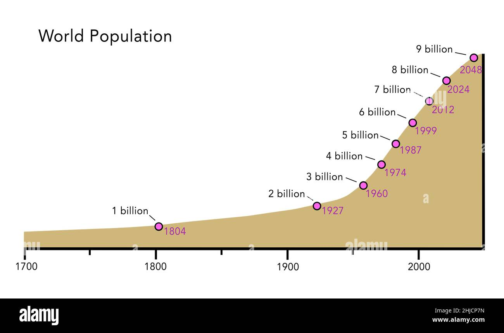

La crescita demografica si riferisce all'incremento o decremento della popolazione di una determinata area geografica in un periodo di tempo specifico. Questo fenomeno è influenzato da vari fattori, tra cui tassi di natalità, mortalità, migrazione e tassi di fertilità. Una crescita demografica positiva si verifica quando il numero di nati supera il numero di morti, mentre una crescita demografica negativa si verifica quando il contrario è vero.
Esistono diverse fasi nella dinamica della crescita demografica. Inizialmente, molte società hanno sperimentato una crescita lenta a causa di alti tassi di mortalità e natalità. Con lo sviluppo economico e sociale, i tassi di mortalità iniziano a diminuire grazie a progressi nella sanità e nella medicina, ma i tassi di natalità rimangono elevati, portando a una crescita demografica accelerata.
Qui in seguito trovi l'andamento demografico dal 1700 a oggi:
- Rivoluzione Industriale (circa 1760-1840): Durante questo periodo, molte società europee hanno sperimentato un aumento significativo della popolazione a causa di miglioramenti nelle condizioni di vita, nell'agricoltura e nelle cure mediche.
- XIX secolo: Molte regioni del mondo hanno continuato a vedere un aumento demografico, ma alcune società industrializzate hanno iniziato a sperimentare una riduzione dei tassi di natalità durante la seconda metà del secolo.
- XX secolo: Questo secolo ha visto un'ampia varietà di trend demografici. Durante le guerre mondiali, molte nazioni hanno subito perdite significative di popolazione, mentre negli anni successivi hanno assistito a baby boom. In molte regioni, la seconda metà del XX secolo ha visto una diminuzione dei tassi di natalità e un'invecchiamento della popolazione.
- XXI secolo: Le tendenze demografiche attuali includono una crescita demografica più rapida in alcune regioni in via di sviluppo, un'invecchiamento della popolazione in molte nazioni industrializzate e sfide globali come la migrazione e i cambiamenti climatici che possono influenzare la distribuzione della popolazione.
